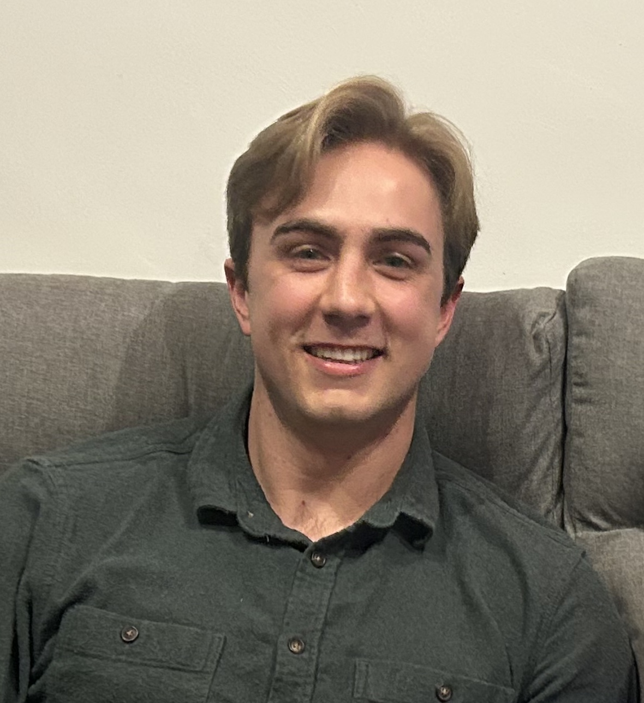

Welcome
Hi I'm Tommy. I'm a PhD student in the Mechanical Engineering Department at UC Berkeley studying computational science.
Hi I'm Tommy. I'm a PhD student in the Mechanical Engineering Department at UC Berkeley studying computational science.
Here is some of my recent work.
In my Numerical Solutions to PDEs course taught by Professor Per-Olof Persson, we discretized a square domain in space with a fourth order compact Pade scheme [1] and filtered with a sixth order compact filter. Filtering is necessary to dissipate higher order noise and ensure stability of the fourth order solution. Time integration was solved via RK4. All coding was done in Julia from scratch.
The Euler Vortex can be solved analytically and served as our benchmark for accuracy of the finite difference solver. The Kelvin-Helmholtz Instability is then solved numerically.


[1] S. K. Lele, “Compact finite difference schemes with spectral-like resolution,” Journal of Computational Physics, vol. 103, no. 1, pp. 16–42, Nov. 1992, doi: https://doi.org/10.1016/0021-9991(92)90324-r.
A simulation of particle interactions is parallelized using, separately, OpenMP, MPI, and CUDA. Before the simulation could be parallelized, it was rewritten to achieve O(n) scaling in the serial implementation. Results demonstrate CUDA achieved higher performance against the other two APIs. This work was done as part of the Applications of Parallel Computers course at UC Berkeley, taught by Professors Jim Demmel and Aydin Buluc.
Below are the strong and weak scaling of the OpenMP and MPI implementations, respectively. Weak scaling involves increasing thread/rank count while maintaining a constant number of particles per thread. For example an 8000 particle simulation on 1 thread would be a 16000 particle simulation on 2 threads. In theory, weak scaling should maintain constant performance, but this is never the case do to communication becoming a larger bottleneck as the overall simulation grows. Strong scaling maintains a constant particle count and increases total threads. In theory, strong scaling would demonstrate performance improving log linearly with thread count. In reality it struggles when there are too many threads, as it becomes less efficient to communicate when there are very few particles per processor or rank.
The convolutional operations applied in CNNs rely on fourth order tensors. In our Numerical Linear Algebra class taught by Professor Jim Demmel, my colleague Mostafa Sedky and I tested multiple tensor decompositions for accelerating the convolutional operation in the context of super resolution applications, specifically the ESRGAN framework [1]. The singular value decomposition (SVD) outperformed canonical polyadic (CP) decomposition in speed. The SVD even slightly improved upon image quality compared to the original image with respect to peak signal to noise ratio and the structural similarity index measure.
[1] X. Wang et al., “ESRGAN: Enhanced Super-Resolution Generative Adversarial Networks,” arXiv.org, 2018. https://arxiv.org/abs/1809.00219
Doctor of Philosophy in Mechanical Engineering University of California, Berkeley (2023 - Present) GPA: 3.93
Bachelor of Science in Environmental Engineering Science University of California, Berkeley (2019 - 2023) GPA: 3.64
Graduate Student Researcher
Multiphysics Simulation and Optimization Lab
Berkeley, CA (Aug 2023 - Present)
Graduate Student Researcher
Lawrence Livermore National Laboratory
Livermore, CA (May 2024 - Dec 2024)
Graduate Student Instructor
UC Berkeley Mechanical Engineering Department
Berkeley, CA (Jan 2024 - May 2024)
Mechanical Project Engineer Intern
TAE Technologies
Foothill Ranch, CA (May 2023 - Aug 2023)